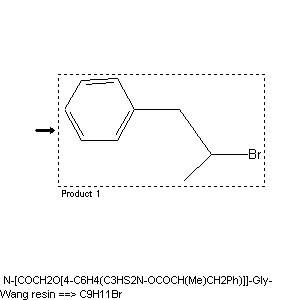

|  |
| FA | RX(1); FLST(1); RX(1) |
Reaction (1 of 1)
| Reaction ID | 8795874 |
| Reactant BRN | 8827100 |
| Reactant | N-[COCH2O[4-C6H4(C3HS2N-OCOCH(Me)CH2Ph)]]-Gly-Wang resin |
| Product BRN | 2041553 |
| Product | (2-bromo-propyl)-benzene |
| No. of Reaction Details | 1 |
Reaction Details (1 of 1)
| Reaction Classification | Preparation |
| Reagent | BrCCl3 |
| Solvent | benzene |
| Time | 2 hour(s) |
| Other Conditions | Irradiation |
| Reaction Type | Hunsdiecker reaction |
| Citation Pointer | 6277450; Journal; Luca, Lidia De; Giacomelii, Giampaolo; Porcu, Giancarlo; Taddei, Maurizio; ORLEF7; Org.Lett.; EN; 3; 6; 2001; 855 - 858; |
Reference (1 of 1)
| Citation Number | 6277450 |
| Document Type | Journal |
| Authors | Luca, Lidia De; Giacomelii, Giampaolo; Porcu, Giancarlo; Taddei, Maurizio |
| CODEN | ORLEF7 |
| Journal Title | Org.Lett. |
| Language Code | EN |
| (Series) Volume | 3 |
| Number | 6 |
| Publication Year | 2001 |
| Page | 855 - 858 |